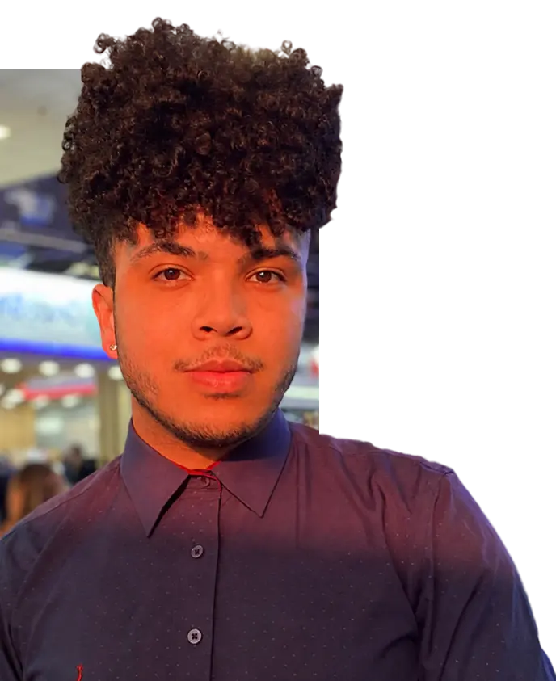
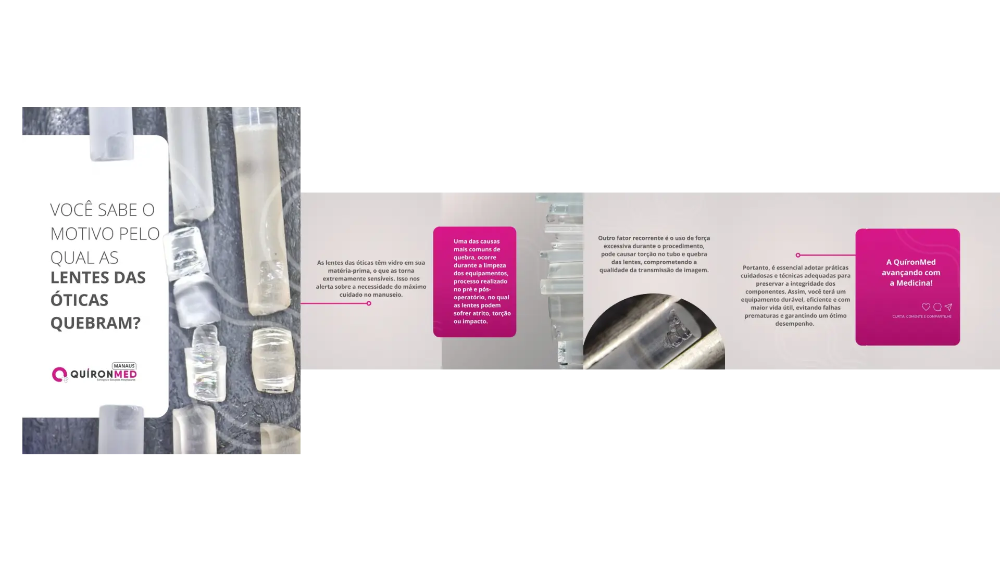
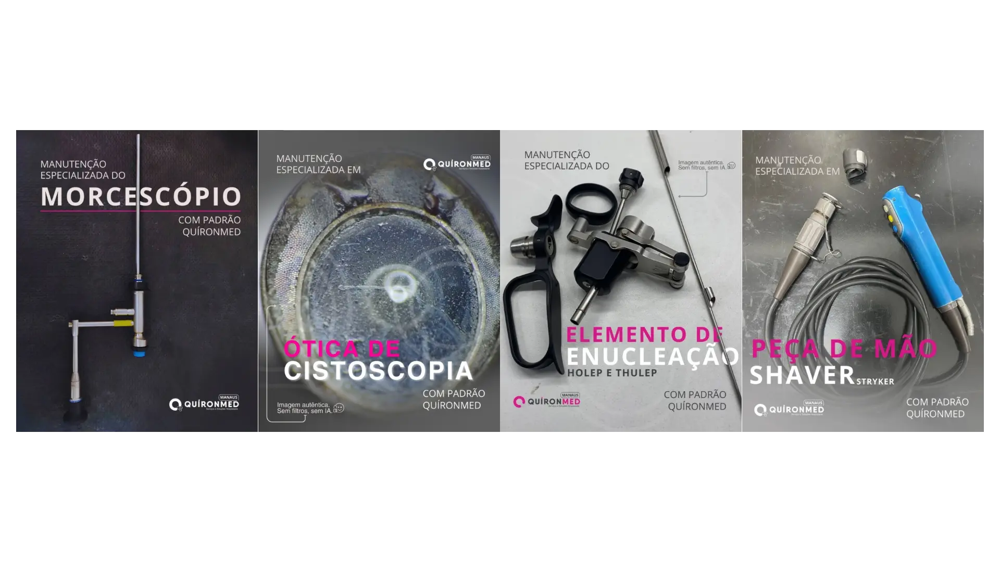
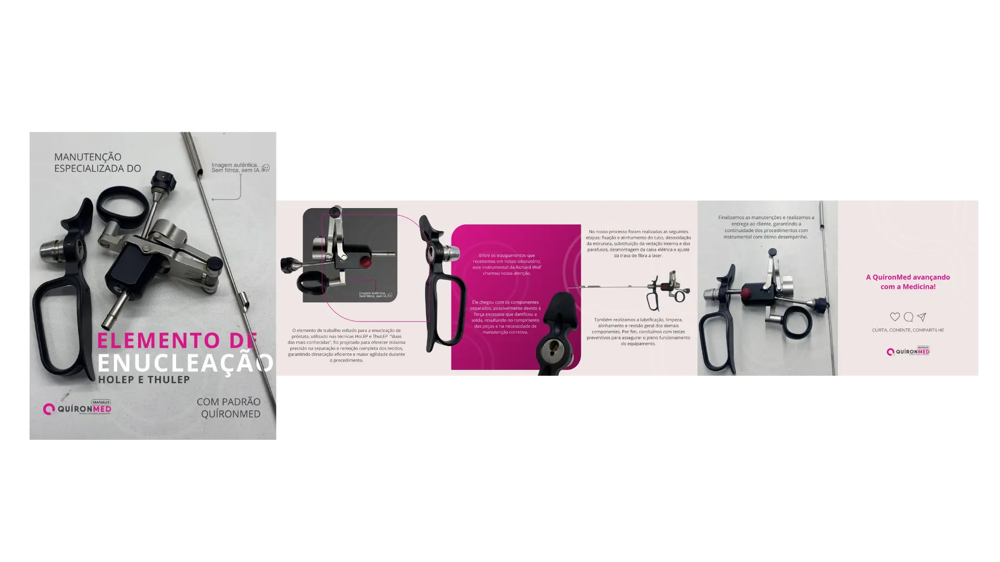
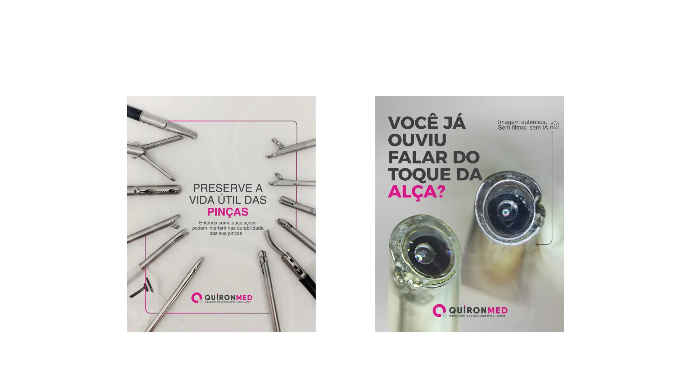
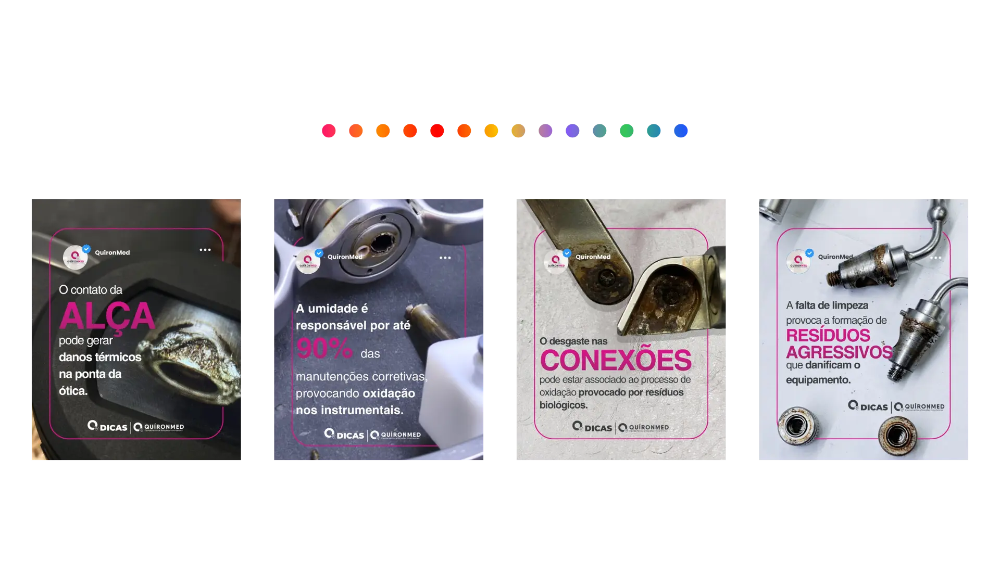
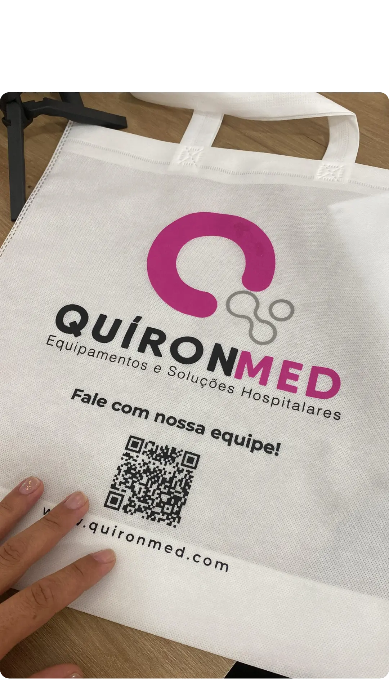
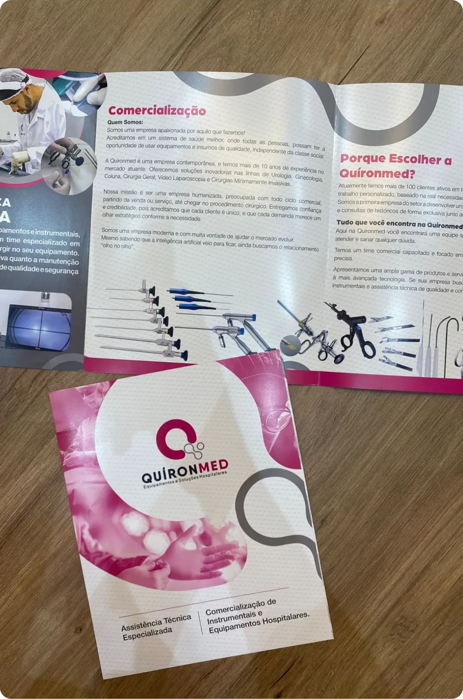
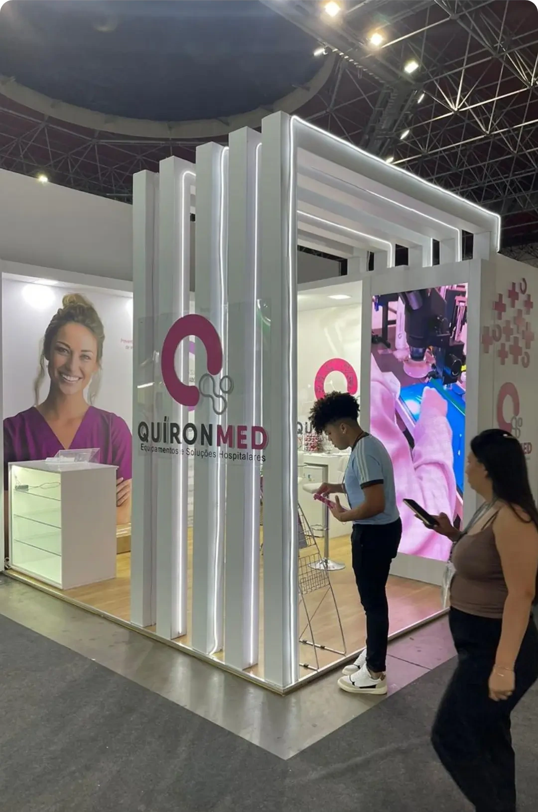

Prazer, meu nome é Lucas Evangelista.
Trabalho há mais de 3 anos com marketing e estratégia de conteúdo para redes sociais. Sou formado em Marketing pela Universidade UNIPIAGET e atualmente atuo na Ambiental PRO, onde aplico tudo o que aprendi ao longo do meu processo de aprendizado.
Durante esse período, tive a oportunidade de explorar diversas áreas do marketing e conhecer melhor
minhas habilidades. Hoje, gostaria de compartilhar um pouco sobre alguns dos projetos dos quais
fiz parte.
Todos esses trabalhos são autorais e surgiram a partir das comunicações da marca,
como uma forma de transmitir de maneira clara a verdadeira intenção da marca e sua conexão com o
público.
O design estratégico é a chave para traduzir especificações técnicas em uma comunicação visual que realmente conecta. Com foco em criar um storytelling claro, acessível e impactante, transformo dados e processos complexos em posts, carrosséis e artes que engajam o público, constroem confiança e evidenciam a qualidade e credibilidade da sua marca.
Este conteúdo foi desenvolvido para transformar uma comunicação complexa, repleta de especificações técnicas, em algo claro e acessível.

Por meio de análise e simplificação da linguagem, conseguimos transmitir a informação da melhor forma possível.
Após analisar o público e suas necessidades, criamos uma série de conteúdos para mostrar a realidade da manutenção em equipamentos já conhecidos e também em tecnologias recém-lançadas no mercado.

Mostrando as manutenções mais impactantes que já passaram pelo laboratório.
Todo o conteúdo foi desenvolvido em formato carrossel, permitindo a construção de um storytelling claro e eficiente, desde a entrada do equipamento, passando pelo problema e pela solução, até a sua saída do laboratório.

Cada etapa era sempre acompanhada por imagens reais dos equipamentos,
reforçando a verdade e a transparência do processo.
No final, incluíamos prints de
feedbacks dos clientes que receberam seus equipamentos de volta, fortalecendo a credibilidade do conteúdo.
Post técnico alinhando informações e identidade visual da marca.

E também criamos esses posts que são o nosso "arroz com feijão": conteúdos mais flexíveis, próximos e fáceis de consumir, publicados de forma recorrente.

A ideia é manter uma comunicação constante, reforçando que a marca conhece esse mercado e domina.
De roteiros criativos à edição final, cada vídeo é pensado de forma estratégica para capturar a essência da marca e engajar o público. Seja na produção de conteúdo educativo, na cobertura dinâmica de feiras e estandes, ou na criação de vinhetas e materiais para redes sociais, o foco é entregar produções de alta qualidade visual com um forte impacto narrativo.
Produção de vídeos em eventos, com transmissão nas redes sociais, destacando nosso estande, nossos produtos e as principais soluções apresentadas ao público.
Nessa série, também criamos uma vinheta de abertura padrão para todos os vídeos, com o objetivo de reforçar a identidade visual da marca.
Esses vídeos fazem parte da série ‘QDicas’, criada para oferecer orientações práticas aos nossos clientes sobre como manter seus equipamentos sempre em perfeito estado de funcionamento. Cada episódio traz dicas rápidas e eficientes para prolongar a vida útil dos equipamentos, garantir desempenho ideal e evitar problemas comuns.
Presença estratégica em eventos é fundamental para o fortalecimento da marca e a captação de novos negócios. Realizo o planejamento completo da comunicação visual e institucional para grandes feiras e congressos, desde a idealização de estandes atrativos até a criação de materiais de apoio como folders e sacolas personalizadas, garantindo que cada ponto de contato traduza credibilidade e inovação (com destaque em grandes eventos como a feira Hospitalar e o CBU).
O evento aconteceu em Belo Horizonte, Minas Gerais, e todo o processo de fechamento do evento e contratação de serviços foi realizado à distância.



A expo teve duração de três dias e, por esse motivo, foi necessário
um planejamento
cuidadoso para garantir que o evento acontecesse da melhor forma
possível.
Para isso, desenvolvemos folders, sacolinhas e o estande, todos alinhados à
identidade visual da
marca, criada do zero especificamente para essa ocasião.
Hospitalar | O Maior Evento em Saúde da América Latina!
São Paulo 2025
40º Congresso Brasileiro de Urologia | CBU
Florianópolis (SC) 2025
Ao longo deste processo, tive a oportunidade de aplicar na prática todo o conhecimento que venho adquirindo, desenvolvendo projetos com foco na criação, no aprimoramento e na implementação de novas ideias.
Agradeço a sua atenção e o tempo dedicado a conhecer meu trabalho.
Vamos construir algo incrível juntos!
Entrar em contato